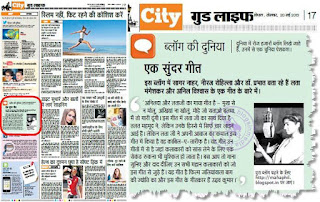

मैने महफिल में अब तक सबसे ज्यादा किसी संगीतकार के गीतों को सुनवाया है तो वे हैं "अनिल विश्वास (अनिलदा)। कई गीत सुनवाने के बाद भी लगता है अभी बहुत से गीत हैं जो संगीत रसिकों के कानों से बहुत दूर हैं। मैं ऐसे ही गानों को खोजता रहता हूँ, जिनकी चर्चा कहीं नहीं होती या अगर होती हो तो बहुत ही कम।
इस श्रेणी में आज एक बार फिर से अनिलदा और लताजी का गाया गीत प्रस्तुत है, इस गीत में लता जी का साथ दिया है तलत महमूद ने, लेकिन उनके हिस्से में सिर्फ चार लाईने आई हैं। लेकिन लता जी ने अपनी आवाज का कमाल इस गीत में किया है वह काबिल-ए-तारीफ़ है।
यह गीत उन गीतों में से है जहाँ कलाकारों को साँस लेने के लिए एक सैकण्ड रुकना भी मुश्किल हो जाता है। और ज्यादा बोर नहीं करूंगा, बस आप तो गाना सुनिए और दाद दीजिए उन सभी महान कलाकारों को जो इस गीत से जुड़े हैं।
यह गीत है फिल्म जलियाँ वाला बाग की ज्योति का और इस गीत के गीतकार हैं उद्धव कुमार
इस श्रेणी में आज एक बार फिर से अनिलदा और लताजी का गाया गीत प्रस्तुत है, इस गीत में लता जी का साथ दिया है तलत महमूद ने, लेकिन उनके हिस्से में सिर्फ चार लाईने आई हैं। लेकिन लता जी ने अपनी आवाज का कमाल इस गीत में किया है वह काबिल-ए-तारीफ़ है।


यह गीत उन गीतों में से है जहाँ कलाकारों को साँस लेने के लिए एक सैकण्ड रुकना भी मुश्किल हो जाता है। और ज्यादा बोर नहीं करूंगा, बस आप तो गाना सुनिए और दाद दीजिए उन सभी महान कलाकारों को जो इस गीत से जुड़े हैं।
यह गीत है फिल्म जलियाँ वाला बाग की ज्योति का और इस गीत के गीतकार हैं उद्धव कुमार
लता: मुख से ना मोलू, अखियां ना खोलूं
मुख से ना बोलूं
मोहे जो सताओ बलमा, मोहे जो सताओ
मैं तो गारी दूंगी
लपट-झपट मोरी घुंघराली लट से
उलझ ना नटखट,
पलट-पलट के देख ना मोहे
तोरे मन में कपट है
चल हट चल हट पास ना
आ मैं तो गारी दूंगी
मुख से ना बोलूं-अखियां ना खोलूं
तलत: दिल तो हमारा तेरे नैनों का मारा
तुझ बिन होगा कैसे गुज़ारा-२
लता: जिया ना जलाओ बलमा
जिया ना जलाओ
मैं तो गारी दूंगी
मीत लंगर तू तो आठ प्रहर
मोरे घर के डगर में ठहर ठहर
मो पे डाले है नजर
है सबको खबर
तू है बड़ा बेसबर
झूठी बात ना बना
मैं तो गारी दूंगी
मुख से ना मोलू,
अखियां ना खोलूं
तलत: मुख ना दिखाऊं तेरे दर पे ना आऊं
जा के अकेले कहीं आँसू बहाऊं-२
लता: छोड़ के जो जाओ
बलमा-छोड़ के जो जाओ
मैं तो गारी दूंगी
हाय हाय रे अनाड़ी
मोरी खिली फुलवारी
तूने घर में उजारी
मैं तो हारी-हारी-हारी
सुन कसम से हारी
मैं तो तुझपे हूं वारी
सुन विनती
हमारी मोहे छोड़ के ना जा
मैं तो गारी दूंगी, मुख से ना बोलू
मोहे जो सताओ , मैं तो गारी दूंगी
मुख से ना बोलूं....
Song: Mukh se na bolu
Singer(s): Lata Mangeshker & Talat Mahamood
Film: Jaliyan Wala Bagh ki jyoti
Music : Anil Vishwas
Lyric: Uddhav Kumar
More Songs from this movie
Tere Naam Ka Mahi Saari Duniya_Meena Kapoor
Kya Tera Mera Mel Pardesi_Meena Kapoor
Mohabbat Phool Ki Bhanwre Ko_Rajkumari
Mat ro dharti Mata,
Jano Na Jano Piya Main Toh Chali Re_Lata Mangeshker
Khamosh Jaamon se_Rajkumari